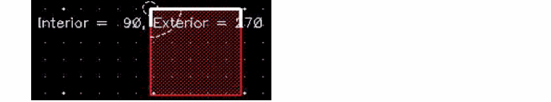
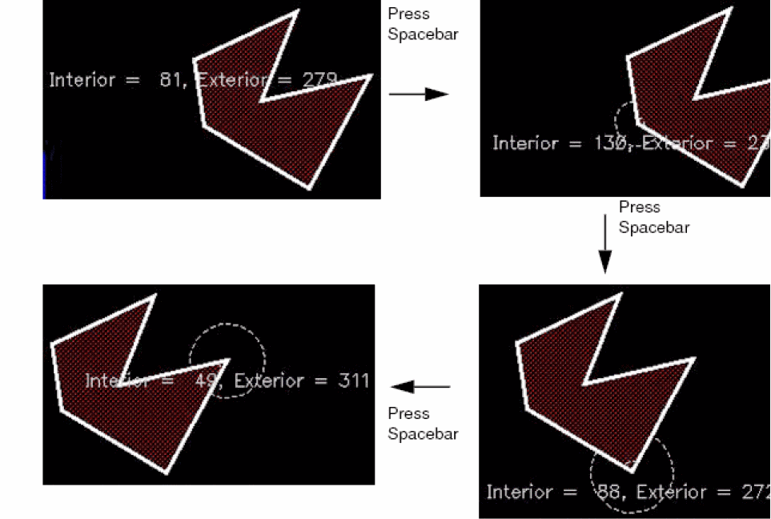
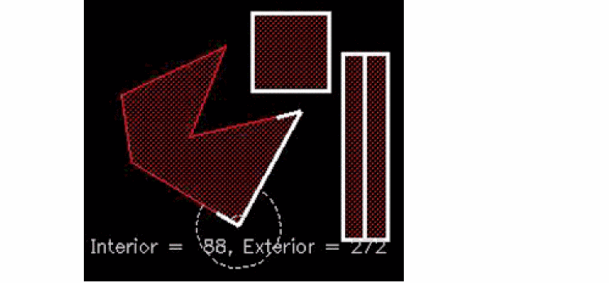
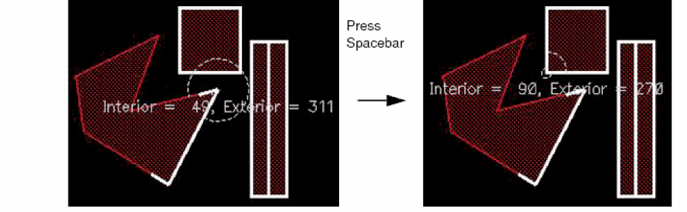
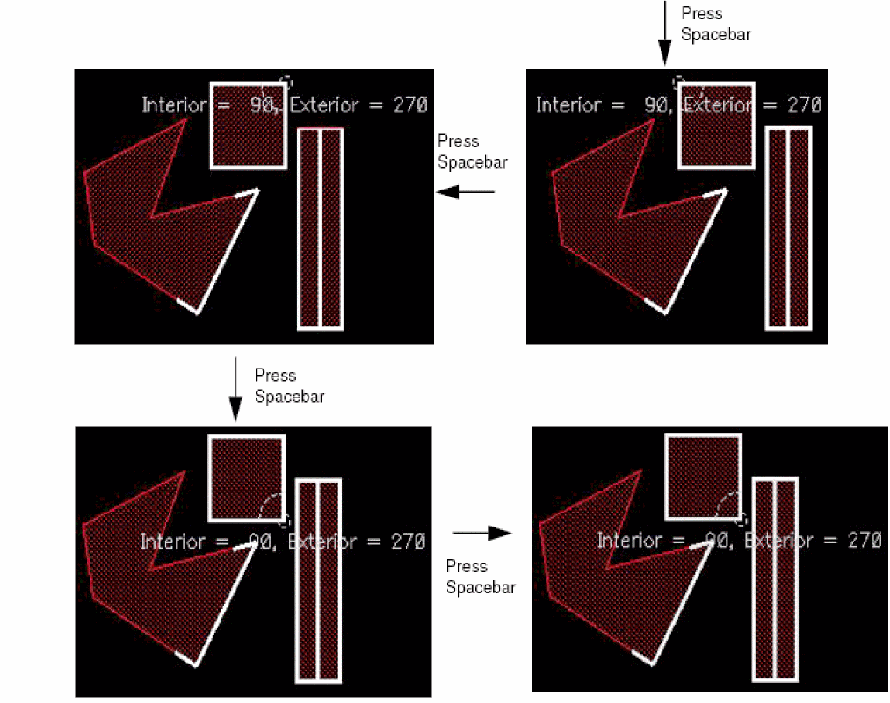

Viewing Angles
You can use the Show Angles command to view the angle enclosed at the intersection of two edges. The command displays both the interior and exterior angles. You can view the angles of a shape by selecting it fully or partially. The Show Angles command supports both pre-selection and post-selection modes.
The Show Angles command does not support paths or pathSegs with two end points and paths or pathSegs with only one of the end points selected.
-
To view the angle measurement between the edges of a shape:
The interior and exterior angle measurements appear, as shown in the figure. The angles are marked with arcs.
 -
To view the angle measurements at all the vertices of a selected shape:
Continue to press the spacebar to view the angles at all the vertices of the shape in succession. If you select a shape partially, angles only at the selected vertices can be viewed.
 -
To view the angle measurements at the vertices of multiple selected shapes:
-
Select multiple shapes, say a rectangle, a path, and the edge of a polygon.
The angle measurements are displayed at one of the vertices of the selected edge of the polygon, as shown in the figure.
 -
Continue to press the spacebar to view the angle measurements for the remaining vertices, that is, all the vertices of the rectangle.
Angle measurements are not displayed for the path because the Show Angles command does not support paths.
If you first run the Show Angles command and then select the required shapes, you can repeatedly cycle through the angles by pressing the spacebar. On the other hand, if you first select the required shapes and then run the Show Angles command, the command exits after cycling through all the angles once.
 -
Press
Escto finish the command.
-
Select multiple shapes, say a rectangle, a path, and the edge of a polygon.
Related Topics
Return to top